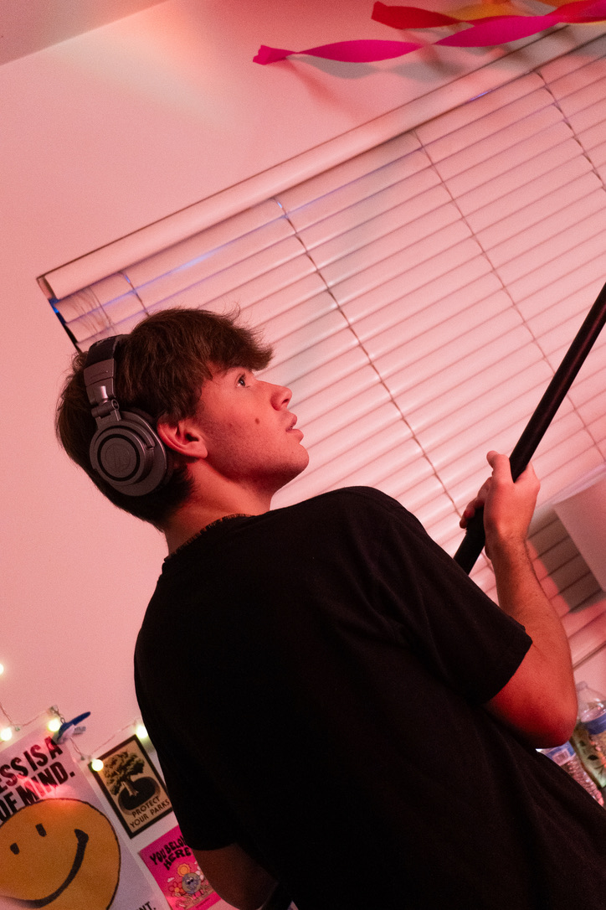
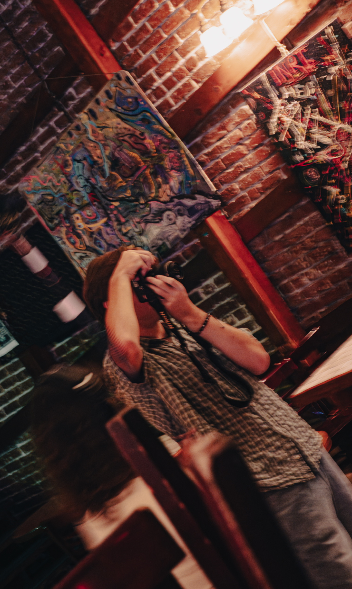
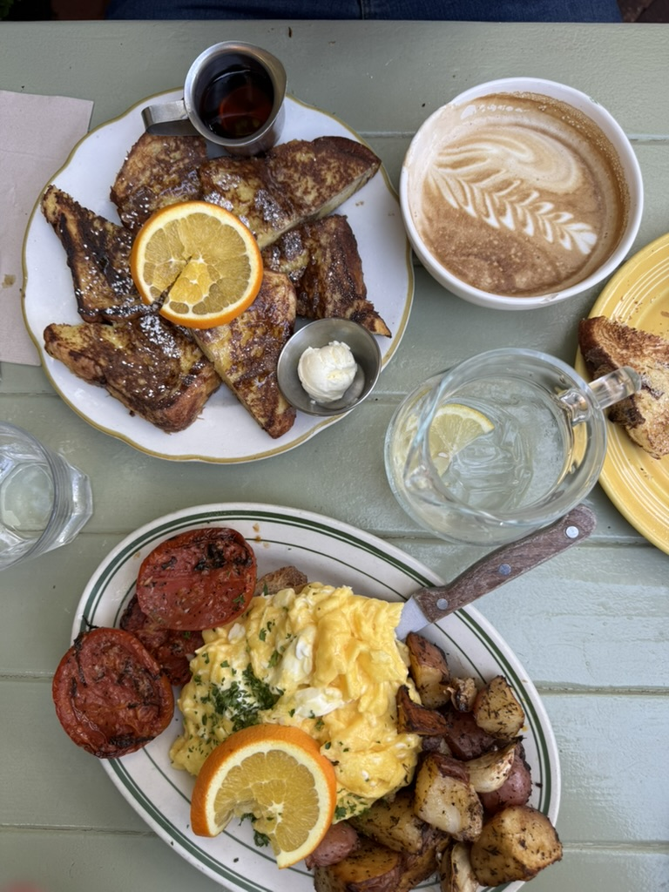
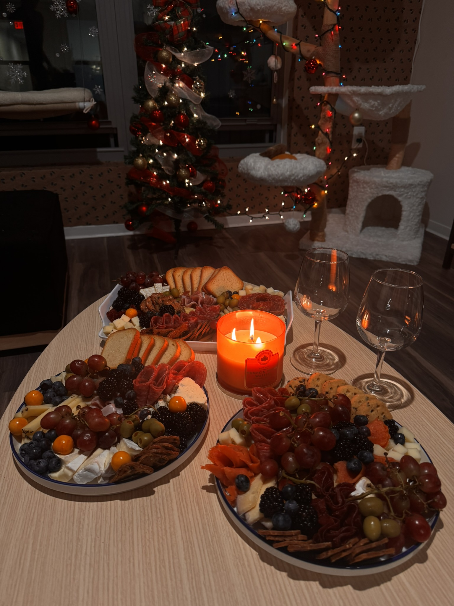
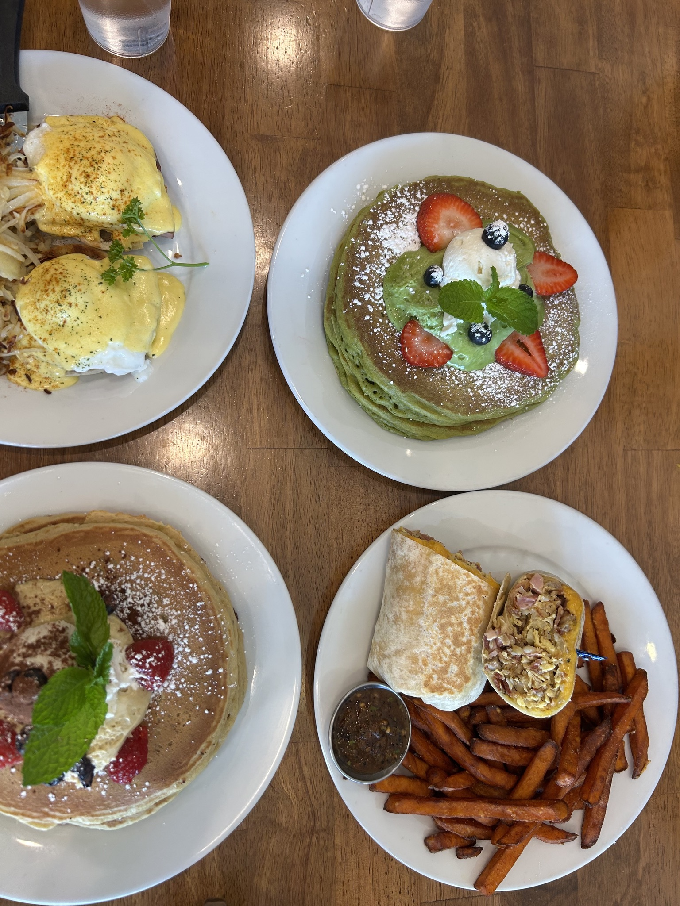

Filmmaker, foodie, student.
I love movies and everything about them, over the last two years at Cal alone I have worked across more than five short film sets, doing everything from directing and producing to editing. I am also a huge foodie, I enjoy almost every type of food (NOT avocados.) and love grabbing a quick bite with friends. My carreer aspirations are in the media industry, either working in a news room or on set at a studio.




